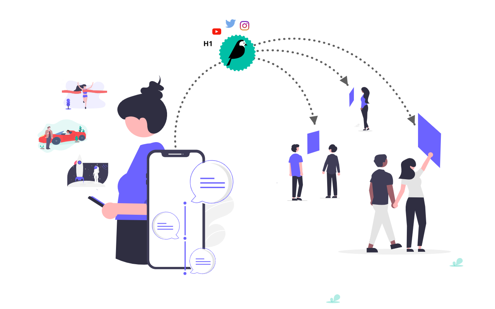

Google Summer of Code 2021 report
The goal of the Wagtail Live project was to propose a flexible open-source liveblogging tool.
A live blog is a blog providing real-time updates on an ongoing event.
As part of the GSOC program, my mentors and I have spent summer (June-August) 2021 working on it.
This report aims to give an overview of the work done during that period.
Design
As a blogging tool, Wagtail Live cares about how a blogger manages content.
In addition to the Wagtail admin that provides a smooth but less mobile-friendly editing interface, Wagtail Live gives a blogger the ability to use a messaging app like Slack, Telegram, Whatsapp to write blog posts.

Wagtail Live can be divided into three major components:
-
Receivers
A receiver is a bridge between a messaging app and a Wagtail Live page.
It receives updates from the messaging app, decodes them, and saves them on the corresponding live page.
-
LivePageMixin
LivePageMixinis the base model for live pages. -
Publishers
A publisher is a bridge between a Wagtail Live page and web clients.
It delivers new/edited/deleted posts of a page to web clients viewing the page live.
Implementation
Milestone 1: Build a basic but working version of Wagtail Live
At that point, Wagtail Live could be used with Slack and interval/long polling publishers.
Milestone 2: More publishers and receivers
This milestone involved adding more publishers and receivers.
Webapp
Initially, we wanted to provide a debugging tool, Wagtail Live debug, to avoid setting up a messaging app in the development phase. However, we finally settled on proposing a complete alternative to messaging apps.
The webapp is based on Django Rest Framework and will propose a user interface. A blogger can use both the webapp interface and the webapp API to manage content.
Related PRs:
- Wagtail Live debug
- Renamed wagtail_live_debug to wagtail_live_interface
- Wagtail Live Interface Receiver
- Renamed wagtail_live_interface to webapp
- Add image support to webapp
It's still a work in progress.
Related Issues:
Current state of the project
We've met most of the expectations outlined in the initial proposal. However, there is still some work to do. I have opened issues decribing what's left.
We would like to have more users try Wagtail Live and give us feedback.
It would also be nice to have new contributors add more receivers/publishers.
Tests and documentation
We added documentation and tests for most of the functionalities proposed.
The documentation is available at https://wagtail.github.io/wagtail-live/.
From this PR, the project is 100% covered.
Tests can be found in the tests module here.
Talks
I was asked to present the project at the What's New in Wagtail webinar. The recording can be found here.
I'm also delivering a talk at the Djangocon US conference, which will take place on October 21-23, 2021.
Feelings
From technical skills to soft skills, I've learned a lot in this project. To name a few:
- Django and Wagtail internals
- asynchronous programming
- websocket protocol
- pytest
- package releasing
- Github actions
I thank my excellent mentors who have also contributed a lot to the project besides their guidance:
- Coen van Der Kamp @allcaps
- Tom Dyson @tomdyson
- Lucas Moeskops @lucasmoeskops
- Storm Heg @stormheg
We have also received nice help from Nick Lee (Senior designer at Torchbox) and Andy Babic @ababic.